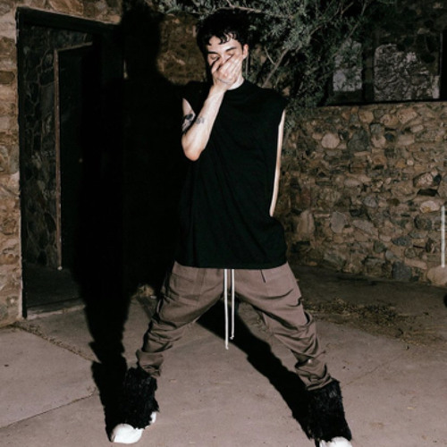
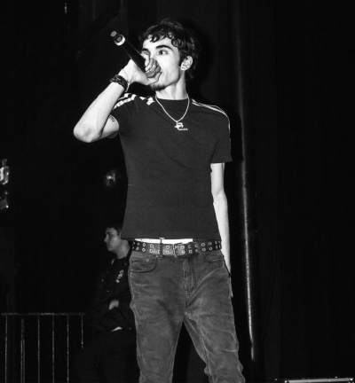

Galerija



Dominic Anthony Paoletti (rojen 19. avgusta 2002), poklicno znan kot Dom Corleo, je ameriški snemalec iz Fremonta v Kaliforniji s sedežem v Phoenixu v Arizoni.Dom je znan po svojem slogu, ki se nenehno spreminja; iz njegovega prejšnjega zvoka, ki spominja na izvajalce, kot je Autumn! in Summrs, njegovemu novejšemu raznolikemu slogu, podobnemu Lanceyju Fouxu in Destroy Lonely.
Ta nadobudni reper iz Bay Area v Kaliforniji zbuja valove s svojim edinstvenim slogom in svežim pogledom. In zdaj je pravkar izdal dvojni glasbeni video z DotComNirvan, ki bo zagotovo pritegnil pozornost.
Dom Corleo je 20-letni reper iz Bay Area v Kaliforniji. Najprej si je začel ustvarjati ime lokalno, preden je sčasoma prebil na nacionalno sceno. Njegovo glasbo zaznamujejo privlačna besedila in pametna besedila.Toda tisto, kar Doma resnično loči od drugih raperjev, je njegova pripravljenost eksperimentirati z novimi zvoki in stili. Toda Dom ni zadovoljen s tem, da bi počival na lovorikah. Vedno išče načine, kako se kreativno spodbuditi. Zato se je odločil združiti z DotComNirvan za svojo najnovejšo izdajo glasbenega videa. Rezultat je vizualno osupljiv in zvočno inovativen video, ki bo zagotovo spodbudil ljudi k pogovoru.
Da ne omenjamo visokokakovostne produkcije za obe skladbi: chai, cade in farsight so producirali "Converse", medtem ko sta "Fly As Hell" producirala nskyi in aerostylin. Do sedaj je izdal dva albuma (Forgive Me For My Sins, On My Own) in en ep album (2014).
Tukaj boste v našem seznamu predvajanja našli najpopularnejše pesmi Dom Corlea.
| Album | Leto izdaje | Žanr |
|---|---|---|
| On My Own | 2023 | Trap |
| 2014 | 2023 | Trap |
| Forgive Me For My Sins | 2022 | Trap |
| Cold Summer | 2022 | Trap |